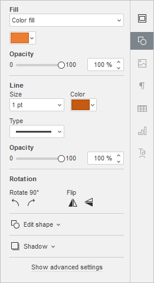
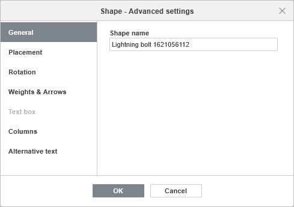
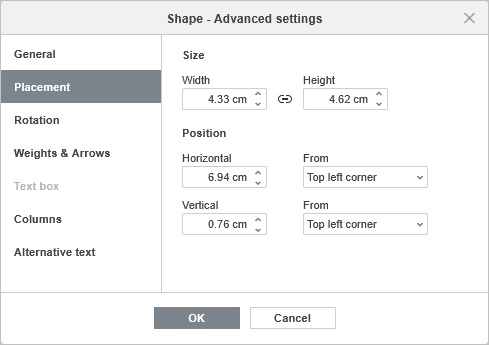
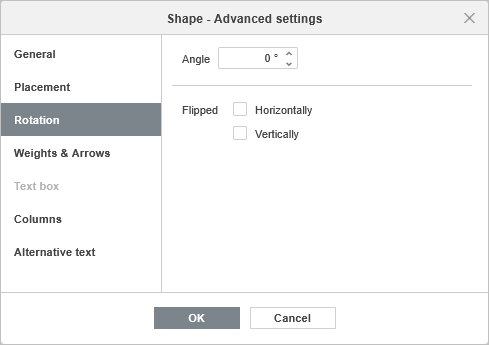
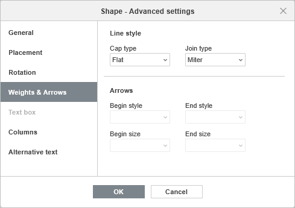
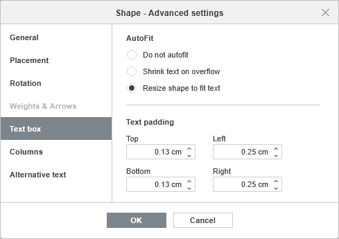
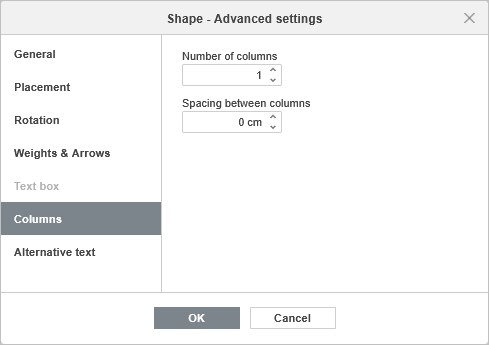
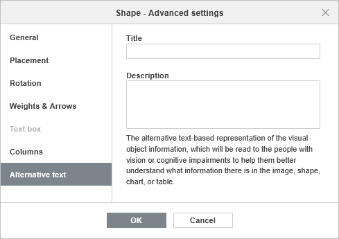
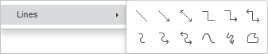

Umetanje i formatiranje automatskih oblika
Umetanje automatskog oblika
Da biste dodali automatski oblik na slajd u Uređivaču prezentacija,
- na listi slajdova sa leve strane izaberite slajd na koji želite da dodate automatski oblik,
- kliknite na padajuću strelicu Galerije oblika na kartici Početna ili na kartici Umetni na gornjoj traci sa alatkama,
- izaberite jednu od dostupnih grupa automatskih oblika iz Galerije oblika: Nedavno korišćeni, Osnovni oblici, Figurirane strelice, Matematika, Grafikoni, Zvezde i trake, Oblačići, Dugmad, Pravougaonici, Linije,
- kliknite na željeni automatski oblik unutar izabrane grupe,
-
u oblasti za uređivanje slajda postavite pokazivač miša na mesto gde želite da se oblik postavi,
Napomena: možete kliknuti i prevući da biste razvukli oblik.
-
kada je automatski oblik dodat, možete promeniti njegovu veličinu, položaj i svojstva. Automatski oblik možete sačuvati kao sliku na svom računaru koristeći opciju Sačuvaj kao sliku u kontekstnom (desni klik) meniju.
Napomena: da biste dodali natpis unutar automatskog oblika, uverite se da je oblik izabran na slajdu i počnite da kucate tekst. Tekst koji dodate na ovaj način postaje deo automatskog oblika (kada pomerate ili rotirate oblik, tekst se pomera ili rotira zajedno sa njim).
Takođe je moguće dodati automatski oblik u raspored slajda. Da biste saznali više, pogledajte ovaj članak.
Kopiranje stilskog formatiranja automatskog oblika
Da biste kopirali određeno stilsko formatiranje automatskog oblika,
- izaberite automatski oblik čije formatiranje želite da kopirate pomoću miša ili koristeći tastaturu,
- kliknite na ikonu Kopiraj stil na kartici Početna gornje trake sa alatkama (pokazivač miša će izgledati ovako ),
- izaberite željeni automatski oblik da biste primenili isto formatiranje.
Podešavanje postavki automatskog oblika
- Iseci, Kopiraj, Nalepi – standardne opcije koje se koriste za isecanje ili kopiranje izabranog teksta/objekta i lepljenje prethodno isečenog/kopiranog teksta ili objekta na trenutnu poziciju kursora.
- Rasporedi se koristi za dovođenje izabranog automatskog oblika u prvi plan, slanje u pozadinu, pomeranje napred ili nazad, kao i za grupisanje ili razgrupisavanje oblika radi izvođenja operacija nad više njih odjednom. Da biste saznali više o raspoređivanju objekata, pogledajte ovu stranicu.
- Poravnaj se koristi za poravnanje oblika ulevo, po sredini, udesno, gore, po sredini ili dole. Da biste saznali više o poravnanju objekata, pogledajte ovu stranicu.
- Rotiraj se koristi za rotiranje oblika za 90 stepeni u smeru kazaljke na satu ili suprotno od kazaljke na satu, kao i za horizontalno ili vertikalno preslikavanje oblika.
- Sačuvaj kao sliku se koristi za čuvanje oblika kao slike na vašem računaru.
-
Uredi tačke se koristi za prilagođavanje ili promenu zakrivljenosti oblika.
- Da biste aktivirali tačke sidrenja oblika koje je moguće uređivati, kliknite desnim tasterom miša na oblik i izaberite Uredi tačke iz menija ili kliknite na opciju Uredi oblik > Uredi tačke na desnom panelu. Crni kvadrati koji postanu aktivni predstavljaju tačke na kojima se dve linije spajaju, a crvena linija ocrtava oblik. Kliknite i prevucite da biste promenili položaj tačke i oblik konture.
-
Kada kliknete na tačku sidrenja, pojaviće se dve plave linije sa belim kvadratima na krajevima. To su Bezijerove ručice koje vam omogućavaju da kreirate krivu i promenite njenu glatkoću.

-
Dok su tačke sidrenja aktivne, možete ih dodavati i brisati.
Da biste dodali tačku obliku, držite Ctrl i kliknite na mesto gde želite da dodate tačku sidrenja.
Da biste obrisali tačku, držite Ctrl i kliknite na nepotrebnu tačku.
- Napredna podešavanja oblika se koriste za otvaranje prozora „Oblik – Napredna podešavanja“.
- Dodaj u raspored se koristi za spajanje automatskog oblika sa pozadinskim rasporedom slajda.
Neke postavke automatskog oblika mogu se izmeniti korišćenjem kartice Podešavanja oblika na desnoj bočnoj traci. Da biste je aktivirali, kliknite na automatski oblik i izaberite ikonu Podešavanja oblika sa desne strane. Ovde možete promeniti sledeća svojstva:

-
Popuna – koristite ovaj odeljak da biste izabrali popunu automatskog oblika. Možete izabrati sledeće opcije:
- Popuna bojom – za određivanje pune boje koju želite da primenite na izabrani oblik.
- Gradijentna popuna – za popunjavanje oblika sa dve boje koje se postepeno prelaze jedna u drugu.
- Slika ili tekstura – za korišćenje slike ili unapred definisane teksture kao pozadine oblika.
- Šablon – za popunjavanje oblika dvobojnim dizajnom sastavljenim od pravilno ponavljanih elemenata.
- Bez popune – izaberite ovu opciju ako ne želite da koristite popunu.
Za detaljnije informacije o ovim opcijama, pogledajte odeljak Popunjavanje objekata i izbor boja.
-
Linija – koristite ovaj odeljak da biste promenili širinu, boju ili tip linije automatskog oblika.
- Da biste promenili širinu linije, izaberite jednu od dostupnih opcija iz padajuće liste Veličina. Dostupne opcije su: 0.5 pt, 1 pt, 1.5 pt, 2.25 pt, 3 pt, 4.5 pt, 6 pt. Ili izaberite opciju Bez linije ako ne želite da koristite liniju.
- Da biste promenili boju linije, kliknite na obojeno polje ispod i izaberite željenu boju. Možete koristiti izabranu boju teme, standardnu boju ili izabrati prilagođenu boju.
- Da biste promenili tip linije, izaberite odgovarajuću opciju iz odgovarajuće padajuće liste (puna linija je podrazumevano primenjena, ali je možete promeniti u neku od dostupnih isprekidanih linija).
- Da biste promenili neprozirnost linije, unesite željenu vrednost ručno ili koristite odgovarajući klizač.
-
Rotacija se koristi za rotiranje oblika za 90 stepeni u smeru kazaljke na satu ili suprotno od kazaljke na satu, kao i za horizontalno ili vertikalno preslikavanje oblika. Kliknite na jedno od dugmadi:
- za rotiranje oblika za 90 stepeni suprotno od kazaljke na satu
- za rotiranje oblika za 90 stepeni u smeru kazaljke na satu
- za horizontalno preslikavanje oblika (sleva nadesno)
- za vertikalno preslikavanje oblika (odozgo nadole)
-
Uredi oblik – koristite ovaj odeljak za uređivanje tačaka oblika ili za zamenu trenutnog automatskog oblika drugim izabranim sa padajuće liste.
-
Uredi tačke se koristi za prilagođavanje ili promenu zakrivljenosti oblika.
-
Kada kliknete na tačku sidrenja, pojaviće se dve plave linije sa belim kvadratima na krajevima. To su Bezijerove ručice koje vam omogućavaju da kreirate krivu i promenite njenu glatkoću.
-
Dok su tačke sidrenja aktivne, možete ih dodavati i brisati.
Da biste dodali tačku obliku, držite Ctrl i kliknite na mesto gde želite da dodate tačku sidrenja.
Da biste obrisali tačku, držite Ctrl i kliknite na nepotrebnu tačku.
-
Kada kliknete na tačku sidrenja, pojaviće se dve plave linije sa belim kvadratima na krajevima. To su Bezijerove ručice koje vam omogućavaju da kreirate krivu i promenite njenu glatkoću.
- Promeni oblik se koristi za zamenu trenutnog automatskog oblika. Izaberite drugi automatski oblik sa padajuće liste.
-
Uredi tačke se koristi za prilagođavanje ili promenu zakrivljenosti oblika.
-
Sena – otvorite ovaj meni da biste izabrali jedan od unapred definisanih stilova senke koji se koriste za oblik.
- Bez senke – poništite izbor ove stavke menija da biste prikazali senku, i obrnuto.
- Boja – izaberite jednu od dostupnih boja sa palete Boje teme ili Standardne boje; koristite alatku Pipeta da biste kopirali boju sa drugih objekata u dokumentu; ili kliknite na stavku menija Više boja da biste kreirali prilagođenu boju.
-
Podesi senku – kreirajte prilagođenu senku koristeći sledeće klizače:

- Providnost – podesite providnost senke.
- Veličina – podesite veličinu senke.
- Ugao – podesite ugao senke u odnosu na njen objekat.
- Udaljenost – podesite udaljenost senke od njenog objekta.
Da biste promenili napredna podešavanja automatskog oblika, kliknite desnim tasterom miša na oblik i izaberite opciju Napredna podešavanja oblika iz kontekstnog menija ili kliknite levim tasterom miša na oblik i pritisnite vezu Prikaži napredna podešavanja na desnoj bočnoj traci. Otvoriće se prozor sa svojstvima oblika:

Opšte – prikazuje izmenjivo ime oblika koje se može koristiti za referenciranje.

Kartica Položaj omogućava promenu Širine i/ili Visine automatskog oblika. Ako je dugme Stalne proporcije aktivirano (u tom slučaju izgleda ovako ), širina i visina će se menjati zajedno uz zadržavanje originalnog odnosa stranica automatskog oblika.
Takođe možete postaviti tačan položaj koristeći polja Horizontalno i Vertikalno, kao i polje Od gde možete pristupiti podešavanjima kao što su Gornji levi ugao i Centar.

Kartica Rotacija sadrži sledeće parametre:
- Ugao – koristite ovu opciju za rotiranje oblika za tačno određeni ugao. Unesite potrebnu vrednost izraženu u stepenima u polje ili je prilagodite pomoću strelica sa desne strane.
- Preslikano – označite polje Horizontalno da biste horizontalno preslikali oblik (sleva nadesno) ili označite polje Vertikalno da biste vertikalno preslikali oblik (odozgo nadole).

Kartica Debljine i strelice sadrži sledeće parametre:
-
Stil linije – ova opcija omogućava podešavanje sledećih parametara:
-
Tip završetka – ova opcija omogućava podešavanje stila završetka linije, pa se može primeniti samo na oblike sa otvorenom konturom, kao što su linije, polilinije itd.:
- Ravan – krajnje tačke će biti ravne.
- Zaobljen – krajnje tačke će biti zaobljene.
- Kvadratan – krajnje tačke će biti kvadratne.
-
Tip spoja – ova opcija omogućava podešavanje stila spoja dve linije, na primer može uticati na poliliniju ili uglove konture trougla ili pravougaonika:
- Zaobljen – ugao će biti zaobljen.
- Ukošen – ugao će biti zakošen.
- Šiljat – ugao će biti šiljat. Dobro se uklapa sa oblicima sa oštrim uglovima.
Napomena: efekat će biti uočljiviji ako koristite veliku širinu konture.
-
Tip završetka – ova opcija omogućava podešavanje stila završetka linije, pa se može primeniti samo na oblike sa otvorenom konturom, kao što su linije, polilinije itd.:
- Strelice – ova grupa opcija je dostupna ako je izabran oblik iz grupe Linije. Omogućava podešavanje Početnog i Završnog stila strelica, kao i njihove Veličine izborom odgovarajuće opcije iz padajućih lista.

Kartica Okvir za tekst sadrži sledeće parametre:
- Automatsko uklapanje – za promenu načina na koji se tekst prikazuje unutar oblika: Ne prilagođavaj automatski, Smanji tekst pri prekoračenju, Promeni veličinu oblika da odgovara tekstu.
- Margine teksta – za promenu unutrašnjih margina automatskog oblika Gore, Dole, Levo i Desno (tj. udaljenosti između teksta unutar oblika i ivica automatskog oblika).
Napomena: ova kartica je dostupna samo ako je tekst dodat unutar automatskog oblika, u suprotnom je kartica onemogućena.

Kartica Kolone omogućava dodavanje kolona teksta unutar automatskog oblika uz definisanje potrebnog Broja kolona (do 16) i Razmaka između kolona. Kada kliknete na U redu, tekst koji već postoji ili bilo koji drugi tekst koji unesete unutar automatskog oblika biće prikazan u kolonama i prelaziće iz jedne kolone u drugu.

Kartica Alternativni tekst omogućava definisanje Naslova i Opisa koji će biti pročitani osobama sa oštećenjima vida ili kognitivnim smetnjama kako bi im se pomoglo da bolje razumeju sadržaj oblika.
Da biste zamenili dodati automatski oblik, kliknite levim tasterom miša na njega i koristite padajuću listu Promeni automatski oblik na kartici Podešavanja oblika na desnoj bočnoj traci.
Da biste obrisali dodati automatski oblik, kliknite levim tasterom miša na njega i pritisnite taster Delete.
Da biste saznali kako da poravnate automatski oblik na slajdu ili rasporedite više automatskih oblika, pogledajte odeljak Poravnanje i raspoređivanje objekata na slajdu.
Povezivanje automatskih oblika pomoću konektora
Automatske oblike možete povezati linijama sa tačkama povezivanja kako biste prikazali zavisnosti između objekata (npr. ako želite da napravite dijagram toka). Da biste to uradili,
- kliknite na padajuću strelicu Galerije oblika na kartici Početna ili na kartici Umetni na gornjoj traci sa alatkama,
-
izaberite grupu Linije iz menija,

- kliknite na željeni oblik unutar izabrane grupe (osim poslednja tri oblika koji nisu konektori, odnosno Kriva, Škrabotina i Slobodan oblik),
-
postavite pokazivač miša iznad prvog automatskog oblika i kliknite na jednu od tačaka povezivanja koje se pojavljuju na konturi oblika,
-
prevucite pokazivač miša ka drugom automatskom obliku i kliknite na odgovarajuću tačku povezivanja na njegovoj konturi.
Ako pomerate povezane automatske oblike, konektor ostaje pričvršćen za oblike i pomera se zajedno sa njima.
Takođe možete odvojiti konektor od oblika, a zatim ga povezati sa bilo kojim drugim tačkama povezivanja.